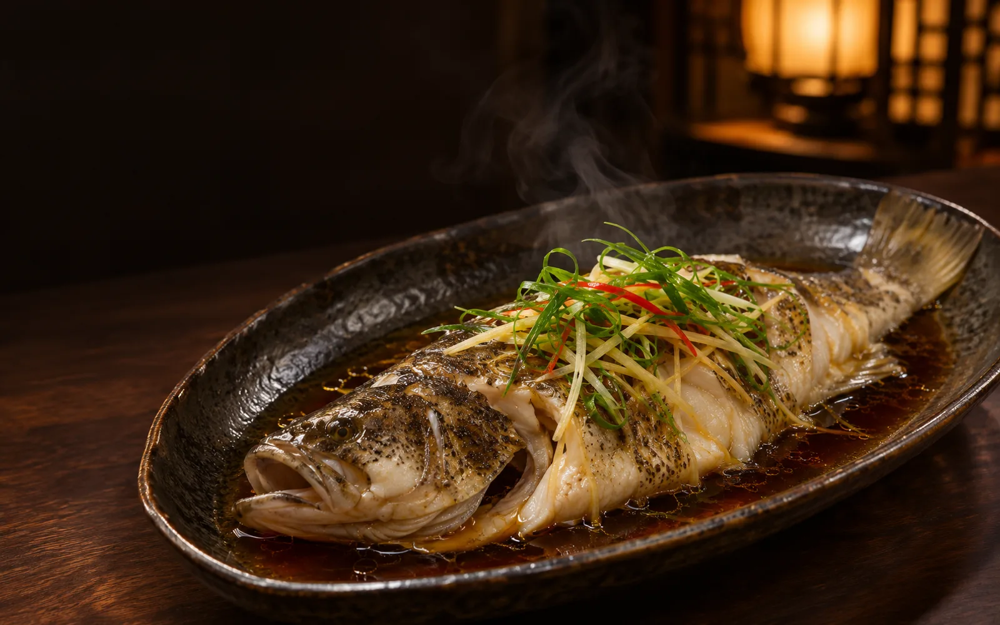

何
小何私厨
家宴现做
历史订单
今天买菜
我的菜单
0

今日主厨菜单
今晚主厨菜单
家宴现做 · 慢慢吃一顿好饭
招牌
热菜
汤品
凉菜
主食
小吃
饮品
家人招牌
有下单记录后将自动生成家庭招牌榜
共 10 道可选
岭南白切鸡
¥48
鲜香清润，讲究火候与食材本味
蜜汁叉烧
¥48
鲜香清润，讲究火候与食材本味
黑椒牛柳
¥58
鲜香清润，讲究火候与食材本味
葱油清蒸鲈鱼
¥64
鲜香清润，讲究火候与食材本味
白灼菜心
¥24
鲜香清润，讲究火候与食材本味
水晶鲜虾饺
¥20
鲜香清润，讲究火候与食材本味
干蒸烧卖
¥24
鲜香清润，讲究火候与食材本味
小炒黄牛肉
¥68
香辣鲜活，锅气十足，特别下饭
剁椒鱼头
¥58
香辣鲜活，锅气十足，特别下饭
干锅手撕包菜
¥30
香辣鲜活，锅气十足，特别下饭
今天买菜计划
自动汇总 11月10日 点好的菜，合并肉类、蔬菜和配料克重。
查看今日计划
我的菜单
去看看